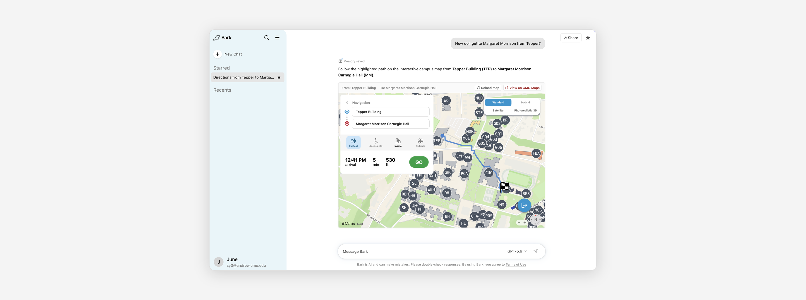
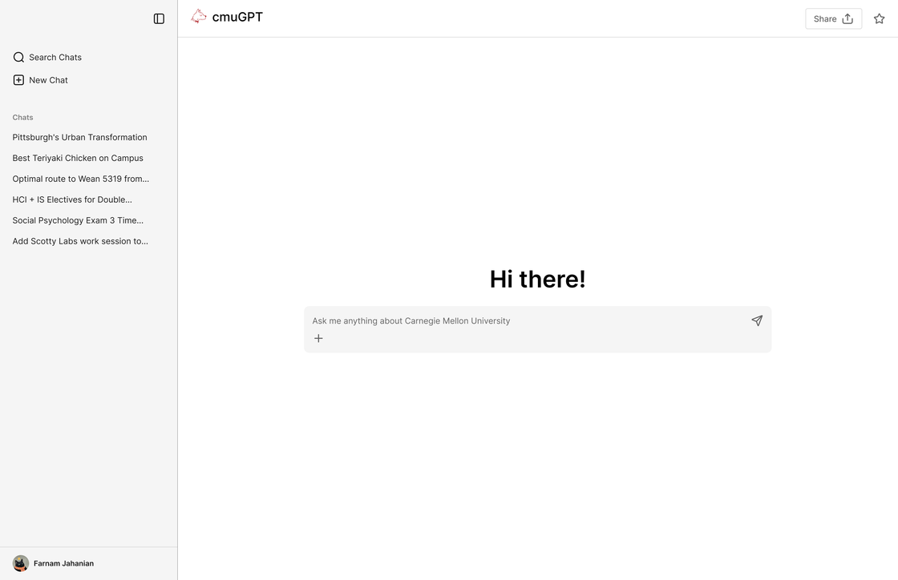
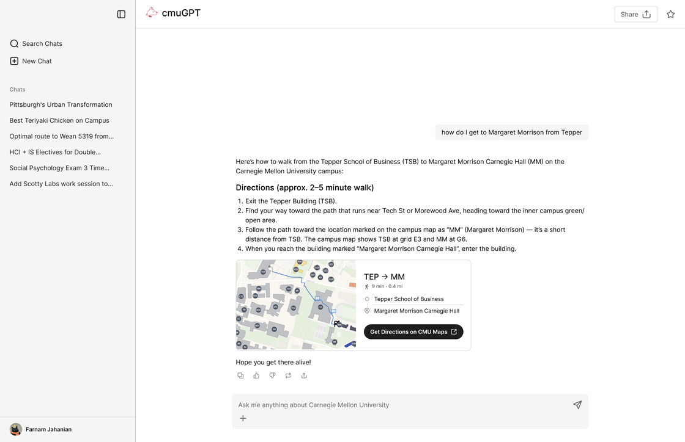
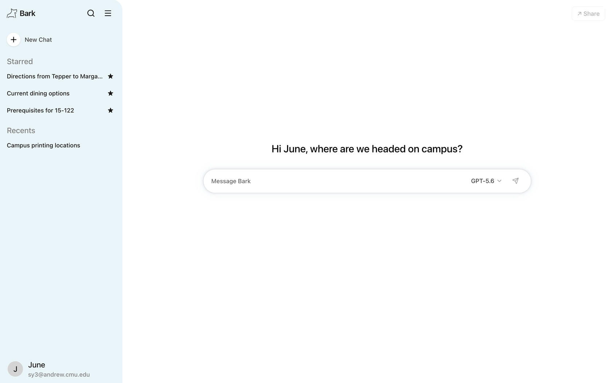
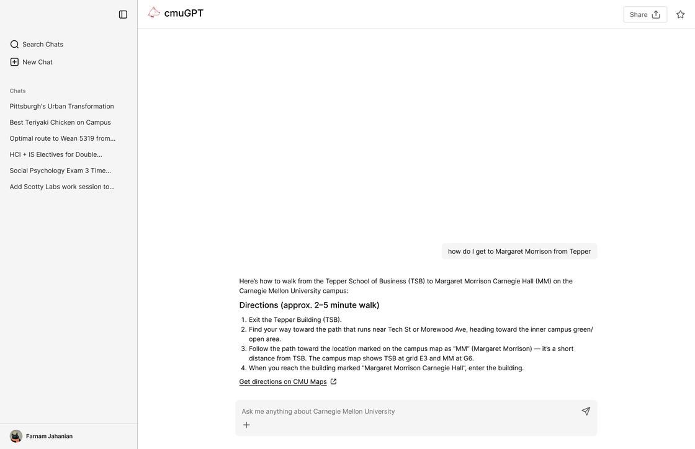
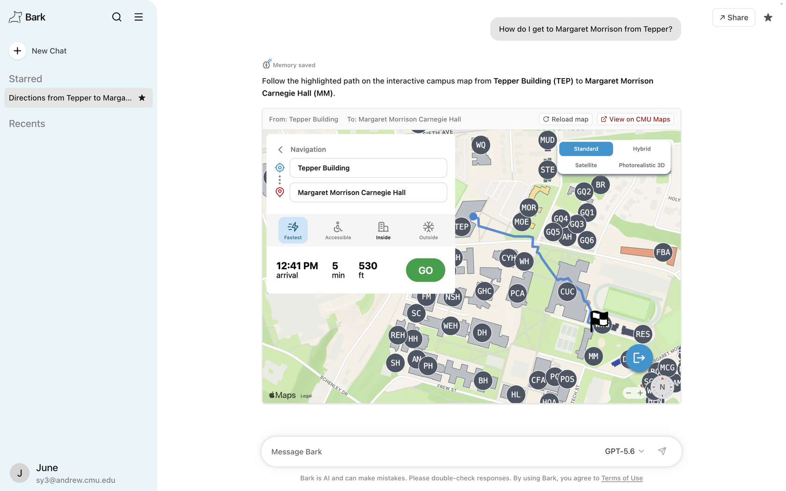
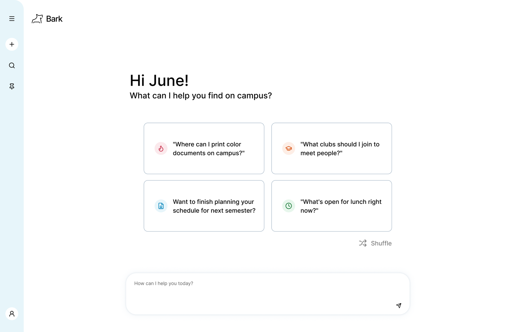
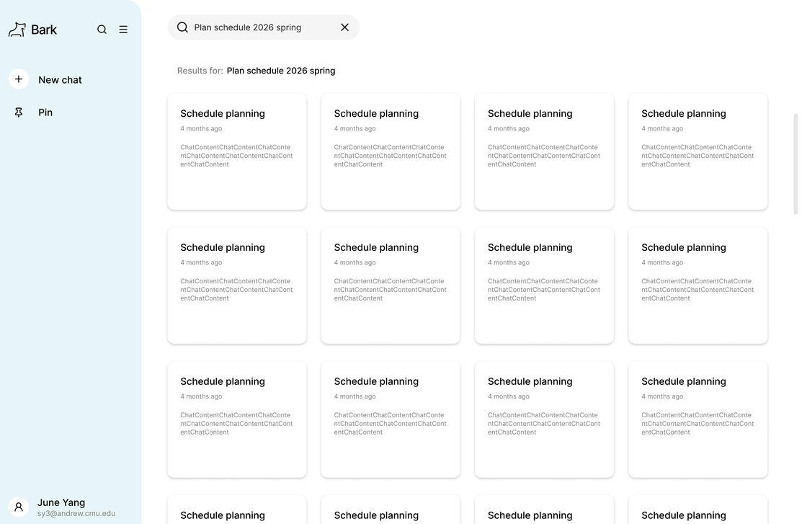
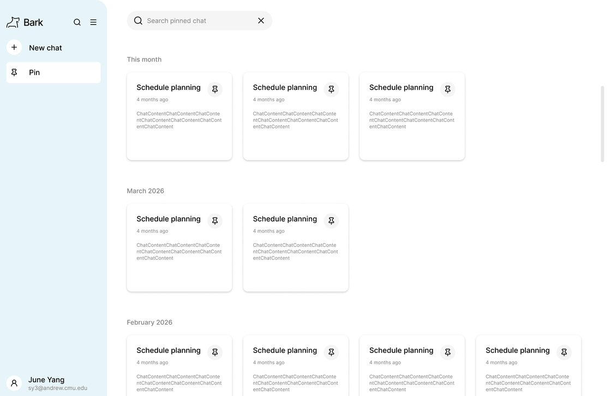
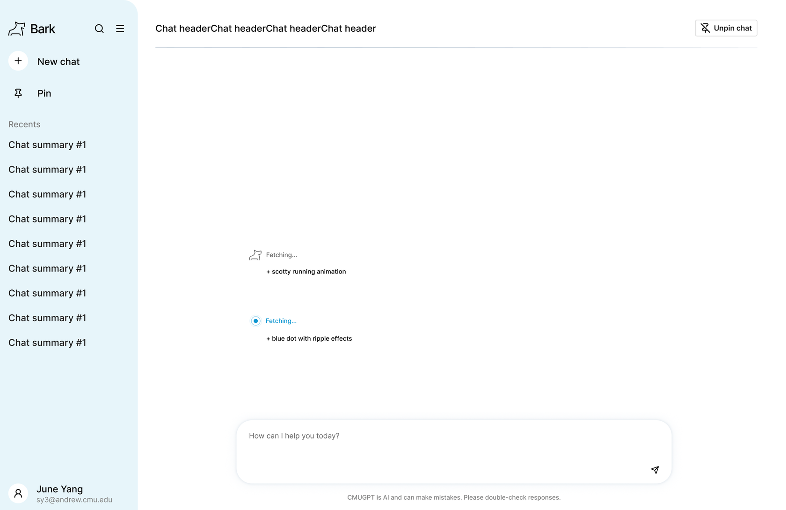

Problem
Students don’t know where to look
Different questions require different websites, and students may not know which one has the answer.
Details
Role: UI/UX Designer
Timeline: Fall 2025 – Spring 2026
Team: ScottyLabs AI Team
Status: Live in beta
Tools: Figma
Summary
Bark (formerly CMUGPT) is an AI assistant for the Carnegie Mellon community, built with ScottyLabs. It pulls information from other ScottyLabs platforms like CMUEats, CMU Courses and CMU Maps, so students can ask questions about CMU in their own words and get answers specific to their needs.

Overview
Problem
Finding answers to everyday questions about CMU often takes more effort than it should.
Solution
Bark lets students ask questions about CMU in their own words and get answers specific to their needs, all in one chat.
Problem
Different questions require different websites, and students may not know which one has the answer.
Solution
Students can ask about dining, directions, and course planning without figuring out which website to visit first.
Problem
General-purpose chatbots may not have the latest dining hours, course details, or campus directions.
Solution
Bark retrieves information from ScottyLabs platforms and links students to the relevant resource.
Problem
Once students find an answer, they often have to search for it all over again the next time.
Solution
Students can search their chats and star the ones they use most to find useful information again.
Research
Student interviews
I interviewed CMU students to understand how they find campus information, which resources they use, and where they encounter difficulties.
In students’ own words:
“There are so many CMU websites, and I don’t really know what information is on each one.”
“I can Google what’s open on campus, but I still have to check if those hours are right for today.”
Key findings
01
Campus information is spread across different websites. Students often aren’t sure which site has what they need, so they have to search several sites for an answer.
02
Students’ questions about CMU often require up-to-date campus information that general search engines and AI assistants may not provide.
Design opportunity
Design principles
I used the research findings and discussions with the ScottyLabs team to define two principles for the design.
01
Let students start typing right away, without extra clicks or distractions.
02
Use ScottyLabs’ existing components and visual styles to keep the experience consistent with its other platforms, while giving Bark its own personality.
Process
Iterations
My initial prototype followed the layout of familiar AI chat tools. Through a review with the ScottyLabs team and user testing, I identified three key areas for improvement.


The interface looked like a generic chatbot and didn’t reflect the ScottyLabs brand system.
Text steps like “find your way toward the path” were vague, and the map was only a static preview.
There was no way to save useful answers to easily return to them later.
Key design shifts
For v1, I rebuilt the interface with ScottyLabs’ components and colors. Students sign in with their CMU account, and Bark greets them by name.

Bark logo and ScottyLabs colorsGreets each student by nameSigned in with a CMU accountInstead of long text answers, Bark now pulls live information from ScottyLabs tools like CMU Maps, CMUEats and CMU Courses. For directions, the vague text steps became an interactive CMU Maps route right in the chat.

Students can now star a chat to keep it at the top of the sidebar, and Bark saves useful details to memory for later chats.

Star a chat to keep itMemory saved for later chatsFinal design
01
Start typing right away.
After signing in with their CMU account, students can ask a question, choose an AI model, or reopen a recent chat from the sidebar.
02
Find campus information without leaving Bark.
Bark pulls information from CMU Maps, CMUEats, and CMU Courses to answer questions about directions, dining, and classes.
When students ask for directions, Bark shows an interactive map with the route distance, estimated arrival time, and options like Accessible and Inside. Students can also open the full route in CMU Maps.
03
Find an old answer without scrolling.
Search shows matching chats as cards, each with its title and when it was last used.
Students can star a chat from its header to keep it in the Starred list at the top of the sidebar.
Next steps
Future developments
I’m currently working with the ScottyLabs AI team to bring these updates to Bark, based on usage data and feedback from the first version. These updates focus on making Bark more intuitive and useful in students’ everyday campus lives.
The home screen will suggest questions on four prompt cards with topic icons and a Shuffle button, picked for each student.

Four prompt cards picked for each studentShuffle for a new setOr type any questionThe cards pull from four signals, in order of priority:
01
Follows up on topics a student asked about before, like finishing a schedule.
02
Matches the academic calendar, from finding clubs in week one to graduation checks.
03
Uses time of day and day of week, so lunch questions show up around noon.
04
Fills any remaining gaps with what other students across campus are asking about this week.
A Pin page will group saved chats by month, and search results will preview each chat.


I’m exploring two loading animations to show when Bark is gathering information: a running Scotty dog and a blue dot with a ripple effect.

Option 1: a running Scotty dogOption 2: a blue dot with a ripple effectReflection
Working closely with the ScottyLabs AI team helped me understand how an AI product moves from design to launch and where UX research fits into that process. I learned to explain my design decisions, discuss feasibility with developers, and work with them to refine the interface.
The project showed me the importance of user research in defining the value an AI assistant can provide. Hearing directly from students helped me understand where they struggled with existing campus resources and how Bark could build on those tools to make finding and using information easier.